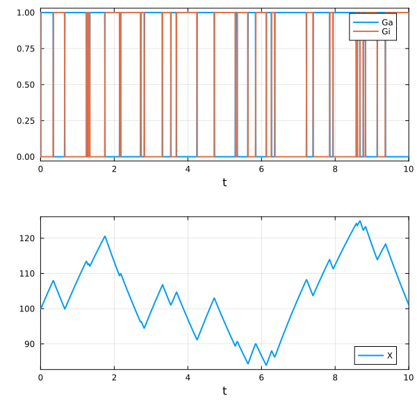
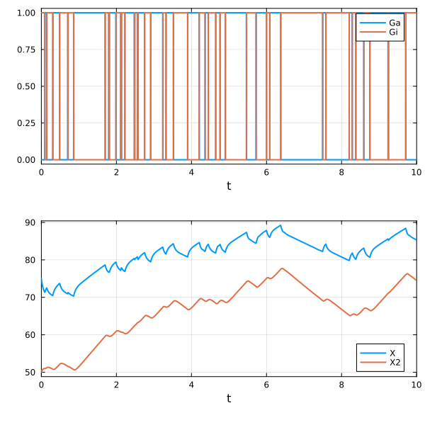
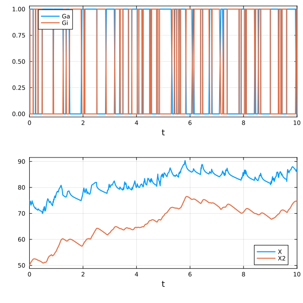

Hybrid simulations
Environment setup and package installation
The following code sets up an environment for running the code on this page.
using Pkg
Pkg.activate(; temp = true) # Creates a temporary environment, which is deleted when the Julia session ends.
Pkg.add("Catalyst")
Pkg.add("JumpProcesses")
Pkg.add("DiffEqNoiseProcess")
Pkg.add("OrdinaryDiffEqTsit5")
Pkg.add("Plots")
Pkg.add("StochasticDiffEq")Quick-start example
The following code provides a brief example of a hybrid simulation (ODE/jump).
using Catalyst, JumpProcesses, OrdinaryDiffEqTsit5, Plots
# A gene switching between inactive (Gi) and active (Ga) states.
# When active, it produces protein X. Gene switching is simulated as a jump process;
# protein dynamics are simulated as an ODE.
rn = @reaction_network begin
kOn, Gi --> Ga, [physical_scale = PhysicalScale.Jump]
kOff, Ga --> Gi, [physical_scale = PhysicalScale.Jump]
p, Ga --> Ga + X, [physical_scale = PhysicalScale.ODE]
d, X --> 0, [physical_scale = PhysicalScale.ODE]
end
# Create a HybridProblem and solve with an ODE solver.
u0 = [:X => 100.0, :Ga => 0.0, :Gi => 1.0]
ps = [:p => 50.0, :d => 0.25, :kOn => 5.0, :kOff => 5.0]
hprob = HybridProblem(rn, u0, (0.0, 10.0), ps)
sol = solve(hprob, Tsit5())
plot(
plot(sol; idxs = [:Ga, :Gi]),
plot(sol; idxs = [:X]);
layout = (2, 1), size = (600,600)
)
We have previously described how Catalyst supports ODE, SDE, and Jump simulations, each offering a different trade-off between accuracy and performance. Consider a gene switching between an ON and OFF state that, when active, produces a protein at high copy numbers. The discrete, noisy gene-switching events are best captured by a jump process, but simulating the high-copy-number protein dynamics as jumps is prohibitively expensive — the ODE approximation is far more efficient there. Such systems benefit from hybrid simulations, where different reactions are resolved at different scales simultaneously.
Catalyst, in conjunction with the JumpProcesses.jl package, supports hybrid simulations mixing ODE, SDE, and jump dynamics. Here, each reaction is individually tagged with a physical_scale to specify how it should be simulated.
Basic example
Consider a gene that switches between an inactive ($Gi$) and active ($Ga$) state, producing a protein ($X$) when active; the protein degrades linearly. The scale for each reaction is set via the reaction metadata interface using the physical_scale key: PhysicalScale.ODE for ODE dynamics and PhysicalScale.Jump for jump dynamics.
using Catalyst
rn = @reaction_network begin
kOn, Gi --> Ga, [physical_scale = PhysicalScale.Jump]
kOff, Ga --> Gi, [physical_scale = PhysicalScale.Jump]
p, Ga --> Ga + X, [physical_scale = PhysicalScale.ODE]
d, X --> 0, [physical_scale = PhysicalScale.ODE]
end\[ \begin{align*} \mathrm{Gi} &\xrightleftharpoons[kOff]{kOn} \mathrm{Ga} \\ \mathrm{Ga} &\xrightarrow{p} \mathrm{Ga} + \mathrm{X} \\ \mathrm{X} &\xrightarrow{d} \varnothing \end{align*} \]
Next, we simulate the model by constructing a HybridProblem. ODE/jump systems require both OrdinaryDiffEqTsit5 and JumpProcesses, and are solved with an ODE solver (here Tsit5).
using JumpProcesses, OrdinaryDiffEqTsit5, Plots
u0 = [:X => 100.0, :Ga => 0.0, :Gi => 1.0]
ps = [:p => 50.0, :d => 0.25, :kOn => 5.0, :kOff => 5.0]
hprob = HybridProblem(rn, u0, (0.0, 10.0), ps)
sol = solve(hprob, Tsit5())We plot the two species groups in separate panels so that their very different copy-number scales are both visible.
using Plots
plot(
plot(sol; idxs = [:Ga, :Gi]),
plot(sol; idxs = [:X]);
layout = (2, 1), size = (600,600)
)
Setting default physical scale
Reactions without a physical_scale annotation are treated as jumps by default, so the explicit [physical_scale = PhysicalScale.Jump] tags in the previous example were redundant. The following model is equivalent:
rn = @reaction_network begin
kOn, Gi --> Ga
kOff, Ga --> Gi
p, Ga --> Ga + X, [physical_scale = PhysicalScale.ODE]
d, X --> 0, [physical_scale = PhysicalScale.ODE]
endThe default scale can be changed via the default_scale keyword argument to HybridProblem. This is convenient when most reactions should use one scale and only a few need tagging. For example, suppose we extend the model with a dimerization step that should also be resolved as an ODE. Rather than tagging every ODE reaction, we tag only the jump reactions and pass default_scale = PhysicalScale.ODE:
rn = @reaction_network begin
kOn, Gi --> Ga, [physical_scale = PhysicalScale.Jump]
kOff, Ga --> Gi, [physical_scale = PhysicalScale.Jump]
p, Ga --> Ga + X
d, X --> 0
(kB,kD), 2X <--> X2
end\[ \begin{align*} \mathrm{Gi} &\xrightleftharpoons[kOff]{kOn} \mathrm{Ga} \\ \mathrm{Ga} &\xrightarrow{p} \mathrm{Ga} + \mathrm{X} \\ \mathrm{X} &\xrightarrow{d} \varnothing \\ 2 \mathrm{X} &\xrightleftharpoons[kD]{kB} \mathrm{X2} \end{align*} \]
Simulation then proceeds as before, with default_scale = PhysicalScale.ODE so that the untagged reactions default to ODE:
u0 = [:X => 75.0, :X2 => 50.0, :Ga => 0.0, :Gi => 1.0]
ps = [:p => 50.0, :d => 0.25, :kOn => 5.0, :kOff => 5.0, :kB => 0.1, :kD => 5.0]
hprob = HybridProblem(rn, u0, (0.0, 10.0), ps; default_scale = PhysicalScale.ODE)
sol = solve(hprob, Tsit5())
plot(
plot(sol; idxs = [:Ga, :Gi]),
plot(sol; idxs = [:X, :X2]);
layout = (2, 1), size = (600,600)
)
Hybrid simulations using SDEs
SDEs can be mixed into a hybrid simulation using PhysicalScale.SDE. The model below has gene switching resolved as jumps, protein production ($X$) resolved as an SDE (CLE approximation), and the remaining reactions resolved as ODEs.
rn = @reaction_network begin
kOn, Gi --> Ga, [physical_scale = PhysicalScale.Jump]
kOff, Ga --> Gi, [physical_scale = PhysicalScale.Jump]
p, Ga --> Ga + X, [physical_scale = PhysicalScale.SDE]
d, X --> 0, [physical_scale = PhysicalScale.ODE]
(kB,kD), 2X <--> X2, ([physical_scale = PhysicalScale.ODE], [physical_scale = PhysicalScale.ODE])
end\[ \begin{align*} \mathrm{Gi} &\xrightleftharpoons[kOff]{kOn} \mathrm{Ga} \\ \mathrm{Ga} &\xrightarrow{p} \mathrm{Ga} + \mathrm{X} \\ \mathrm{X} &\xrightarrow{d} \varnothing \\ 2 \mathrm{X} &\xrightleftharpoons[kD]{kB} \mathrm{X2} \end{align*} \]
For bidirectional reactions, physical_scale must be given once for each direction, just as the rate is given twice.
When a simulation contains SDE reactions, both StochasticDiffEq and DiffEqNoiseProcess must be loaded, and an SDE solver must be used (here we use SRIW1).
using StochasticDiffEq, DiffEqNoiseProcess
u0 = [:X => 75.0, :X2 => 50.0, :Ga => 0.0, :Gi => 1.0]
ps = [:p => 50.0, :d => 0.25, :kOn => 5.0, :kOff => 5.0, :kB => 0.1, :kD => 5.0]
hprob = HybridProblem(rn, u0, (0.0, 10.0), ps)
sol = solve(hprob, SRIW1())
plot(
plot(sol; idxs = [:Ga, :Gi]),
plot(sol; idxs = [:X, :X2]);
layout = (2, 1), size = (600,600)
)
Hybrid simulations for programmatic models
Hybrid simulations can also be carried out for models declared programmatically. The physical_scale metadata is passed to the Reaction constructor via the metadata keyword argument. The first model from the basic example can be created programmatically as follows:
using Catalyst
t = default_t()
@species Gi(t) Ga(t) X(t)
@parameters kOn kOff p d
rxs = [
Reaction(kOn, [Gi], [Ga]; metadata = [:physical_scale => PhysicalScale.Jump]),
Reaction(kOff, [Ga], [Gi]; metadata = [:physical_scale => PhysicalScale.Jump]),
Reaction(p, [Ga], [Ga, X]; metadata = [:physical_scale => PhysicalScale.ODE]),
Reaction(d, [X], []; metadata = [:physical_scale => PhysicalScale.ODE])
]
@named rn = ReactionSystem(rxs, t)
rn = complete(rn)\[ \begin{align*} \mathrm{Gi} &\xrightleftharpoons[kOff]{kOn} \mathrm{Ga} \\ \mathrm{Ga} &\xrightarrow{p} \mathrm{Ga} + \mathrm{X} \\ \mathrm{X} &\xrightarrow{d} \varnothing \end{align*} \]